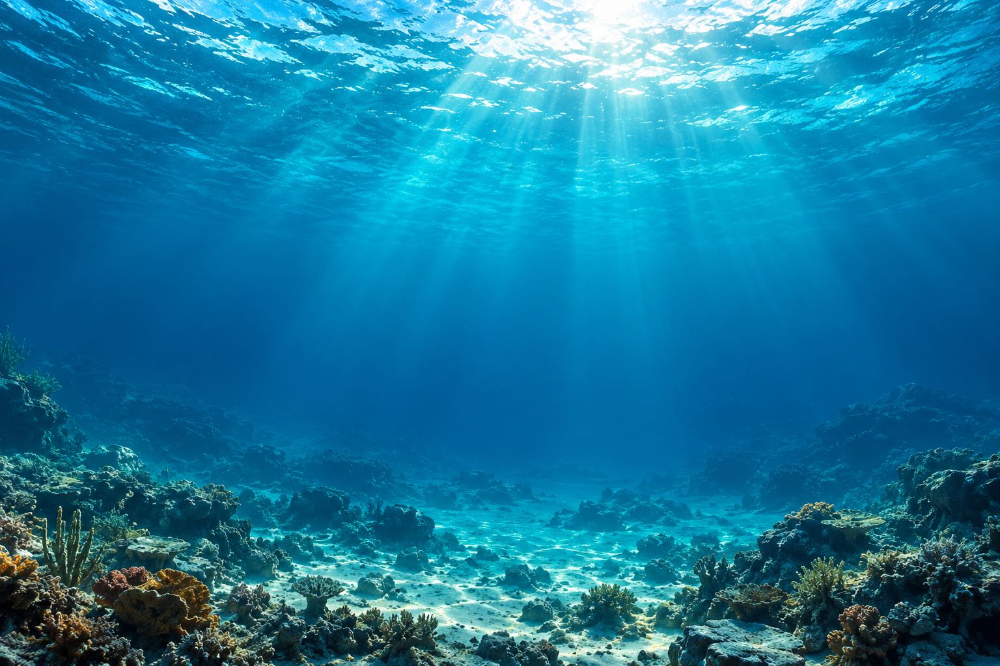
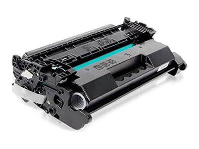
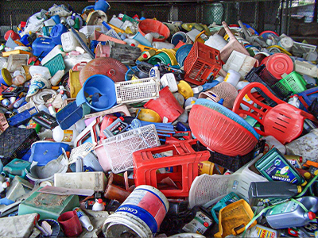
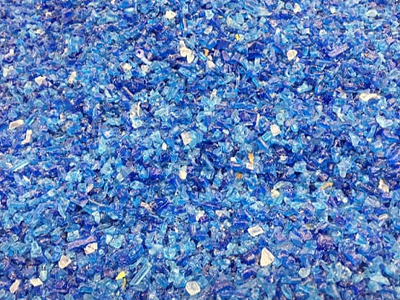
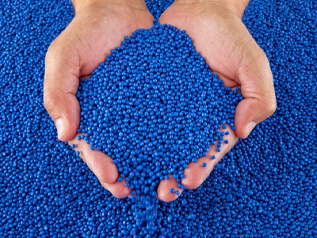
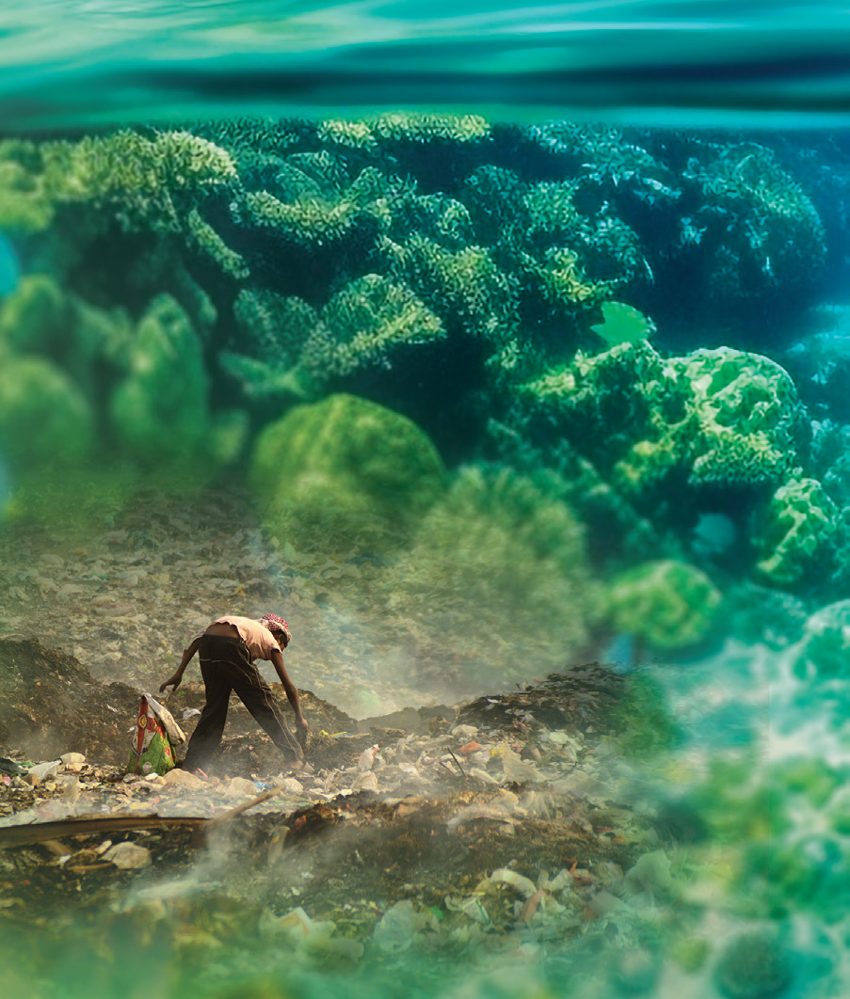

Success rate in
landfill diversion solutions

THE OCEAN REMEMBERS OUR CHOICES
REVOLUTIONISE / REDEFINE / REIMAGINE
Change what
happens next.
What happens on land
doesn’t stay on land.
CLEAR WATERSNo waste in this scene
The turtle’s colours are symbolic. This is a story about our impact.
FROM THE OCEAN TO OUR EVERYDAY CHOICES
Protecting this world
starts with what we do on land.
At RevoWaste, we collect, sort and process waste so useful materials can return to use. From the cartridge in your office to the plastics in your operation, there is work we can do today.
Explore our solutionsPROGRESS WITH PURPOSELess waste.
Less waste.
More possibility.
Printer cartridge
recycling rate
Practical solutions.
Measurable progress.
A future worth protecting.Figures reported in RevoWaste’s August 2025 brand guidelines.
Measurable progress.
A future worth protecting.Figures reported in RevoWaste’s August 2025 brand guidelines.
01 / RETHINK YOUR WASTE
There’s a better way
for your waste.
Every waste stream is different.
Explore what we do and discover
what your materials could become.
SMALL ITEM. A SERIOUS OPPORTUNITY.
Empty cartridge.
Plenty left to recover.
99%
Reported cartridge recycling rate
RevoWaste brand guidelines, August 2025

Select a point to follow the process.
A MATERIAL CAN HAVE MORE THAN ONE LIFE
See plastic differently.
Sorted by type and grade.
Processed for another use.

Start with what’s there.
Identify and separate the plastic waste stream.

Break it down.
Suitable plastics are granulated for further processing.

Make it useful again.
Reprocessed material can become a manufacturing input.
Material examples from RevoWaste’s original website. Images illustrate the process, rather than track a single batch.
A CLOSER LOOK
The materials.
The work. The possibilities.
Explore images from
RevoWaste’s original collection.

PROTECT LIFE.
PRESERVE ECOSYSTEMS.
PRESERVE ECOSYSTEMS.
02 / THE REASON WE KEEP GOING
It’s bigger
than recycling.
It’s about what we protect.
The sea turtle is our ocean ambassador. Resilient, enduring and vulnerable to plastic pollution, it reminds us that the choices we make on land reach far beyond it.
At RevoWaste, we work to keep valuable materials in circulation. Better waste management helps protect wildlife, our communities and the next generation.
Let our turtle guide you03 / A LITTLE GUIDANCE. A BIG DIFFERENCE.
Follow the turtle.
Three colours help explain
the impact of our choices.
Select a turtle to explore.
Our turtle colours are a learning guide, not a product certification or a guarantee of recyclability.
04 / THE REVOWASTE WAY
From your site.
Back into use.
A considered process, built around your
business. Follow the journey from
understanding your waste to recovering value.
GOOD QUESTIONS. PRACTICAL ANSWERS.
Let’s clear
a few things up.
Not sure whether your waste can be recycled?+
Start with a conversation. Tell us what the material is, how much you have and where it is located. Our team can assess the waste stream and discuss the available options.
Can you help with difficult waste streams?+
That’s central to our work. We explore reuse and recycling possibilities for materials that would otherwise be sent to landfill. Suitability depends on the material and its condition.
What does “zero waste” mean to RevoWaste?+
It is the direction we work towards: keeping materials in circulation and away from landfills and oceans. It is an ambition, not a claim that every material can already be fully recovered.
Where should we begin?+
Contact the team to discuss your site and waste streams. An assessment helps us understand your needs and develop a practical proposal.
READY TO REIMAGINE YOUR WASTE?
A better future
starts with hello.
Tell us what you have. We’ll help you explore a practical next step.
01
Share your waste details
A few useful details help us understand your needs.
02
gareth@revowaste.co.za+27 67 701 3531Let’s find a suitable route
Our team can discuss materials, collection and your site.